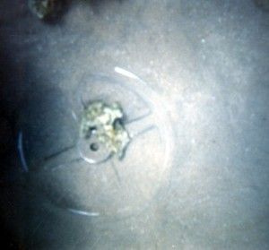
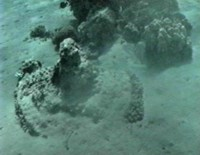
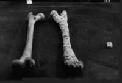
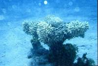
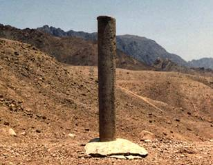
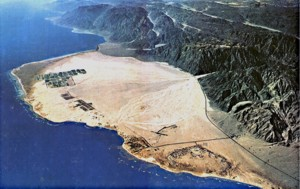
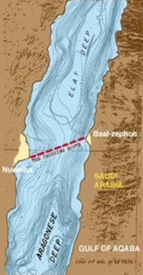
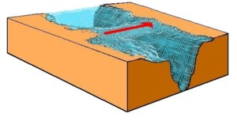
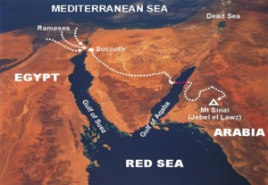

Men occasionally stumble over the truth, but most of them pick themselves up and hurry off as if nothing ever happened.
- Sir Winston Churchill
~~~~~~~~~~~~~~~~~~~~~~~~~~~~~~~
Confirmation of the actual Exodus route has come from divers finding coral-encrusted bones and chariot remains in the Gulf of Aqaba
ONE of the most dramatic records of Divine intervention in history is the account of the Hebrews' exodus from Egypt .
The subsequent drowning of the entire Egyptian army in the Red Sea was not an insignificant event, and confirmation of this event is compelling evidence that the Biblical narrative is truly authentic.
Over the years, many divers have searched the Gulf of Suez in vain for artifacts to verify the Biblical account. But carefully following the Biblical and historical records of the Exodus brings you to Nuweiba, a large beach in th e Gulf of Aqaba , as Ron Wyatt discovered in 1978.
Repeated dives in depths ranging from 60 to 200 feet deep (18m to 60m), over a stretch of almost 2.5 km, has shown that the chariot parts are scattered across the sea bed.
Artifacts found include wheels, chariot bodies as well as human and horse bones. Divers have located wreckage on the Saudi coastline opposite Nuweiba as well.
Since 1987, Ron Wyatt found three 4-spoke gilded chariot wheels. Coral does not grow on gold, hence the shape has remained very distinct, although the wood inside the gold veneer has disintegrated making them too fragile to move.
The hope for future expeditions is to explore the deeper waters with remote cameras or mini-subs.

(ABOVE GILDED CHARIOT WHEEL - Mute witness to the miracle of the crossing of the Red Sea by the Hebrews 3,500 years ago. Found with metal detector. *Coral will not grow on gold)

1. Coral-encrusted chariot wheel, filmed off the Saudi coastline, matches chariot wheels found in Tutankhamen's tomb

2. Mineralized Bone - One of many found at the crossing site (above center). This one Tested by the Dept. of Osteology at Stockholm University , was found to be a human femur, from the right leg of a 165-170cm tall man. It is essentially 'fossilized' i.e. replaced by minerals and coral, hence cannot be dated by radiocarbon methods, although this specimen was obviously from antiquity.

3. Chariot wheel and axle covered with coral and up-ended. Exodus 14:25 "And took off their chariot wheels, that they drave them heavily:....."

Solomon's memorial pillars
WHEN Ron Wyatt first visited Nuweiba in 1978, he found a Phoenician style column lying in the water. Unfortunately the inscriptions had been eroded away, hence the column's importance was not understood until 1984, when a second granite column was found on the Saudi coastline opposite -- identical to the
first, except on this one the inscription was still intact.
In Phoenician letters (Archaic Hebrew), it contained the words: Mizraim (Egypt); Solomon; Edom; death; Pharaoh; Moses; and Yahweh, indicating that King Solomon had set up these columns as a memorial to the miracle of the crossing of the sea. Saudi Arabia does not admit tourists, and perhaps fearing unauthorized visitors, the Saudi Authorities have since remov ed this column, and replaced it with a flag marker where it once stood.
How deep is the water?
THE Gulf of Aqaba is very deep, in places over a mile (1,600m) deep. Even with the sea dried up, walking across would be difficult due to the steep grade down the sides. But there is one spot where if the water were removed, it would be an easy descent for people and animals. This is the line between Nuweiba and the opposite shore in Saudi Arabia .
Depth-sounding expeditions have revealed a smooth, gentle slope descending from Nuweiba out into the Gulf. This shows up almost like a pathway on depth-recording equipment, confirming it's Biblical description "...a way in the sea, and a path in the mighty waters." (Isaiah 43:16)
The Bible writers frequently refer to the miracle of the Red Sea crossing, for it was an event which finds no equal in history.
The Hebrew prophets describe the sea at the crossing site as "...the waters of the great deep ...the depths of the sea..." (Isaiah 51:10).
Knowing the exact spot to which the Bible writers were referring, what is the depth there? The distance between Nuweiba and where artifacts have been found on Saudi coast is about 18km (11 miles).
Along this line the deepest point is about 800m (2,600 feet).
No wonder that Inspired writers of the Bible described it as the mighty waters. And no wonder that not a single Egyptian survived when the water collapsed in upon them.

NUWEIBA BEACH - The spot where the crossing began. The Saudi side also has a beach area of a similar size (See approximate path.)


Model of depths at crossing site.

THE EXODUS ROUTE - With the correct crossing site in the Gulf of Aqaba